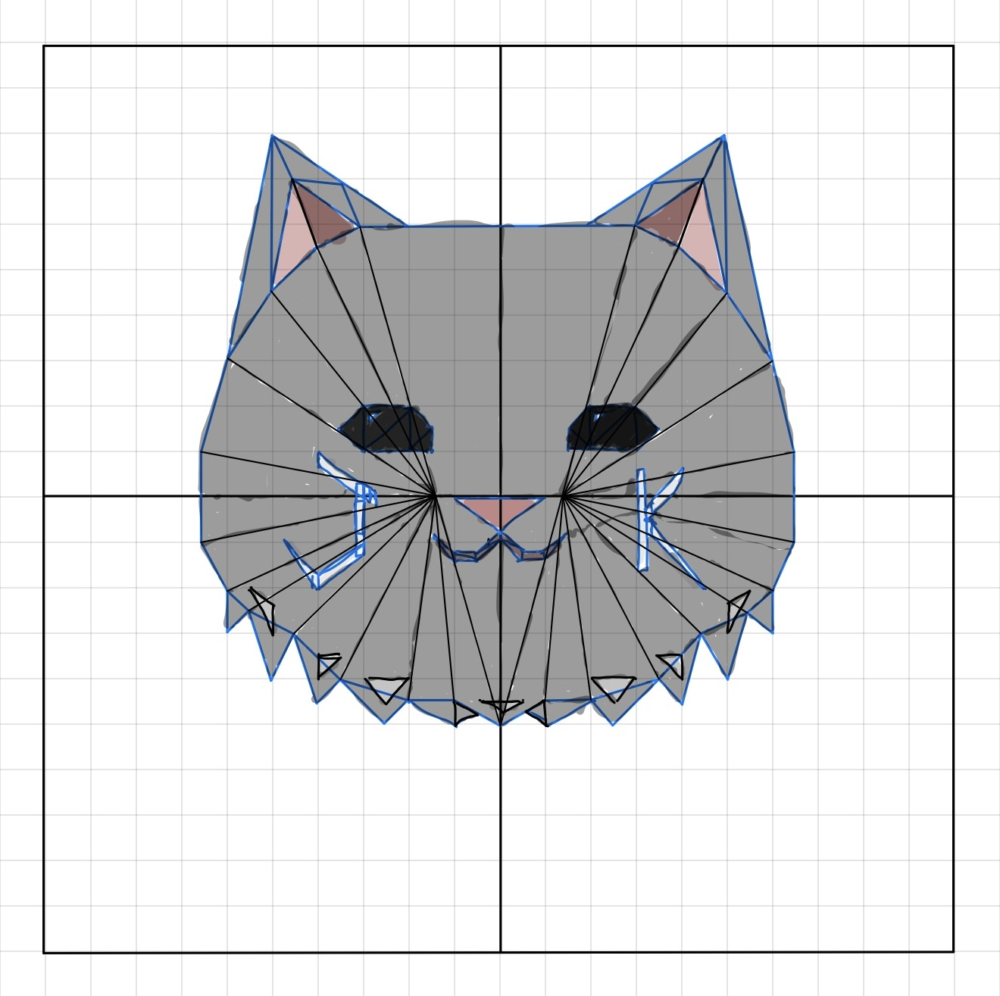

Color 🌈
Green
Red
Red
Green
Blue
Preview:
Erase / Clear 🗑️
Clear
Eraser
Eraser Size
Note:
Make sure you choose the shape again to go back to painting mode!
Shape 📐
Point
Triangle
Circle
Size
Circle Segments
Reference Image 🎨
Name:
Jinho Kim
Email:
jkim641@ucsc.edu

Click this to see my drawing!:
Show My Drawing!
Previous Step of My Drawing!:
Undo
Info:
CSE 160 - Painting Program for Assignment 1.
Awesomeness Add-Ons:
Live Color Preview System.
Eraser Tool and size.
Undo Button to see the my drawing progress.
Notes for Grader:
Most helps from lab videos, Professor videos, LLM, and internet research on painting programs.